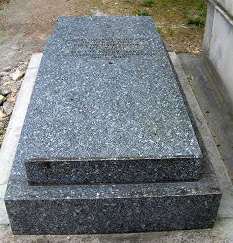
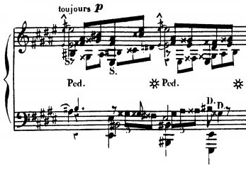

His life
The young Alkan
Alkan was born Charles-Valentin Morhange on 30 November 1813 at 1, Rue de Braque in Paris to Alkan Morhange (1780–1855) and Julie Morhange, née Abraham. Alkan Morhange was descended from a long-established Jewish Ashkenazic community in the region of Metz; the village of Morhange is located about 30 miles (48 km) from the city of Metz. Charles-Valentin was the second of six children – one elder sister and four younger brothers; his birth certificate indicates that he was named after a neighbour who witnessed the birth.
Alkan Morhange supported the family as a musician and later as the proprietor of a private music school in le Marais, in the Jewish quarter of Paris. At an early age, Charles-Valentin and his siblings adopted their father's first name as their last (and were known by this during their studies at the Conservatoire de Paris and subsequent careers).[n 3] His brother Napoléon (1826–1906) became professor of solfège at the Conservatoire, his brother Maxim (1818–1897) had a career writing light music for Parisian theatres, and his sister, Céleste (1812–1897), was a singer. His brother Ernest (1816–1876) was a professional flautist, while the youngest brother Gustave (1827–1882) was to publish various dances for the piano.
An enigmatic death
According to his death certificate, Alkan died in Paris on 29 March 1888 at the age of 74. Alkan was buried on 1 April (Easter Sunday) in the Jewish section of Montmartre Cemetery, Paris, not far from the tomb of his contemporary Fromental Halévy; his sister Céleste was later buried in the same tomb.
For many years it was believed that Alkan met his death when a bookcase toppled over and fell on him as he reached for a volume of the Talmud from a high shelf. This tale, which was circulated by the pianist Isidor Philipp, is dismissed by Hugh Macdonald, who reports the discovery of a contemporary letter by one of his pupils explaining that Alkan had been found prostrate in his kitchen, under a porte-parapluie (a heavy coat/umbrella rack), after his concierge heard his moaning. He had possibly fainted, bringing it down on himself while grabbing out for support. He was reportedly carried to his bedroom and died later that evening. The story of the bookcase may have its roots in a legend told of Aryeh Leib ben Asher, rabbi of Metz, the town from which Alkan's family originated.
His music
Style
"Like ... Chopin", writes pianist and academic Kenneth Hamilton, "Alkan's musical output was centred almost exclusively on the piano". Some of his music requires extreme technical virtuosity, clearly reflecting his own abilities, often calling for great velocity, enormous leaps at speed, long stretches of fast repeated notes, and the maintenance of widely spaced contrapuntal lines. The illustration (right) from the Grande sonate is analysed by Smith as "six parts in invertible counterpoint, plus two extra voices and three doublings – eleven parts in all."Some typical musical devices, such as a sudden explosive final chord following a quiet passage, were established at an early stage in Alkan's compositions.
Macdonald suggests that
unlike Wagner, Alkan did not seek to refashion the world through opera; nor, like Berlioz, to dazzle the crowds by putting orchestral music at the service of literary expression; nor even, as with Chopin or Liszt, to extend the field of harmonic idiom. Armed with his key instrument, the piano, he sought incessantly to transcend its inherent technical limits, remaining apparently insensible to the restrictions which had withheld more restrained composers.
However, not all of Alkan's music is either lengthy or technically difficult; for example, many of the Op. 31 Préludes and of the set of Esquisses, Op. 63.
Moreover, in terms of structure, Alkan in his compositions sticks to traditional musical forms, although he often took them to extremes, as he did with piano technique. The study Op. 39, no. 8 (the first movement of the Concerto for solo piano) takes almost half an hour in performance. Describing this "gigantic" piece, Ronald Smith comments that it convinces for the same reasons as does the music of the classical masters; "the underlying unity of its principal themes, and a key structure that is basically simple and sound."
Some of Alkan's music gives hints of the obsessiveness which some have detected in his personality. The Chant Op. 38, no. 2, entitled Fa, repeats the note of its title incessantly (in total 414 times) against shifting harmonies which make it "cut ... into the texture with the ruthless precision of a laser beam."In modelling his five sets of Chants on the first book of Mendelssohn's Songs Without Words, Alkan ensured that the pieces in each of his sets followed precisely the same key signatures, and even the moods, of the original. Alkan was rigorous in his enharmonic spelling, occasionally modulating to keys containing double-sharps or double-flats, so pianists are occasionally required to come to terms with unusual keys such as E♯ major, the enharmonic equivalent to F major, and the occasional triple-sharp.
Selected recordings
This list comprises a selection of some premiere and other recordings by musicians who have become closely associated with Alkan's works. A comprehensive discography is available at the Alkan Society website.
- Piano Trio, Op. 30 – played by Trio Alkan. Recorded 1992. Naxos, 8555352 (2001)
- Grande sonate, Op. 33 – played by Marc-André Hamelin (piano). Recorded 1994. Hyperion, CDA669764 (1995).
- Études dans tous les tons mineurs, Op. 39 – played by Ronald Smith (piano). Recorded 1977. EMI, SLS 5100 [3 LPs] (1978), partly reissued EMI Gemini, 585 4842 (2003)
- Études dans tous les tons mineurs, Op. 39 and other works – played by Jack Gibbons (piano). Recorded 1995. ASV, CD DCS 227 [2 CDs] (1995)
- Symphony for Solo Piano (Op. 39, no. 4–7) – played by Egon Petri (piano). c. 1952–53. Symposium Records, CD 1145 (1993)
- Symphony for Solo Piano, Op. 39, nos. 4–7 and other works – played by Marc-André Hamelin (piano). Recorded 2000. Hyperion, CDA67218 (2001)
- Concerto, Op. 39, nos. 8–10 – played by John Ogdon (piano). Recorded 1969. RCA, LSC-3192 [LP] (1972). Great British Pianists, 4569132 (1999)
- Concerto, Op. 39, nos. 8–10 and Troisième recueil de chants, Op. 65 – played by Marc-André Hamelin (piano). Recorded 2006. Hyperion Records CDA67569 (2007).
- Le festin d'Esope (Op. 39, no. 12) and other works – played by Raymond Lewenthal. Recorded 1966. RCA LM 2815 [LP mono], LSC-2815 [LP stereo]; BMG High Performance Series 633310 (1999)
- Sonate de concert, Op. 47, for cello and piano – played by Steven Osborne (piano) and Alban Gerhardt (cello). Recorded 2008. Hyperion CDA67624 (2008).
- 11 Pièces dans le style religieux, et une transcription du Messie de Hændel, Op. 72 – played by Kevin Bowyer (organ). Recorded 2005. Toccata TOCC 0031 (2007)
- Ch. V. Alkan: Grande Sonate and Piano Solo Symphony played by Vincenzo Maltempo (Piano Classics PCL0038)
- Ch. V. Alkan: Le festin d'Esope, Sonatine, Ouverture and Trois Morceaux Op. 15 played by Vincenzo Maltempo (Piano Classics PCL0056)
- Ch. V. Alkan: Piano Solo Concerto and Etudes Op. 39 n. 1, 2, 3 played by Vincenzo Maltempo (Piano Classics PCL0061)
- Ch. V. Alkan/Da Motta: The Complete Vianna da Motta Transcriptions played by Vincenzo Maltempo (Toccata Classics TOCC0237)
- Ch. V Alkan: Chanson de la folle au bord de la mer: A Collection of Eccentric Piano Works played by Vincenzo Maltempo (Piano Classics PCL0083)